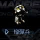

Humanoid 的升級型，速度較慢，但可使用長射程槍，裝甲也較硬。無法對空。
| 名稱 | 說明 |
|---|---|
| UCD 安瓿 | 治療人類型單位 |
| MCD 安瓿 | 治療機械型單位 |
| 隱形裝置 | 隱形 |
| 懸浮 | 不留腳印 |
| 名稱 | 技術等級 | 攻擊力 | 射程 | 射速 | 攻擊模式 |
|---|---|---|---|---|---|
| Long Range Steel Gun | 1 | 188 | 17.5m | 2.0s | 僅對地 |
| Long Range Slim Gun | 52 | 225 | 18.75m | 2.0s | 僅對地 |
| Crocodile | 98 | 225 | 21.5m | 1.9s | 地空 |
| Heavy Range Gun | 133 | 377 | 23.5m | 1.8s | 僅對地 |
資料來源：Ever☆Zone Tistory /106